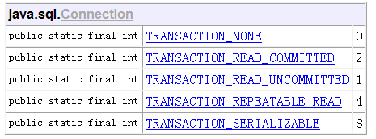

1.事务的概念
通俗的讲，事务指的是一组业务操作ABCD，要么全部成功，要么全部不成功。
2.关系数据库的事务的特性(ACID)
- 原子性(Atomicity)：事务是数据库的逻辑工作单位，而且是必须是原子工作单位，对于修改，要么全部执行，要么全部不执行。
- 一致性(Consistency)：事务在完成时，必须是所有的数据都保持一致状态。在相关数据库中，所有规则都必须应用于事务的修改，以保持所有数据的完整性。
- 隔离性(Isolation)：一个事务的执行不能被其他事务所影响。事务必须是互相隔离的，防止并发读写同一个数据的情况发生 。
持久性(Durability) : 一个事务一旦提交，事物的操作便永久性的保存在DB中。即使此时再执行回滚操作也不能撤消所做的更改。
3.spring事务的隔离级别
ISOLATION_DEFAULT –使用数据库默认的事务隔离级别。
ISOLATION_READ_UNCOMMITTED –这是事务最低的隔离级别，它充许令外一个事务可以看到这个事务未提交的数据(读未提交)。
ISOLATION_READ_COMMITTED –保证一个事务修改的数据提交后才能被另外一个事务读取。另外一个事务不能读取该事务未提交的数据(读已提交)。
ISOLATION_REPEATABLE_READ –这种事务隔离级别可以防止脏读，不可重复读。但是可能出现幻像读(虚读)。
ISOLATION_SERIALIZABLE –这是花费最高代价但是最可靠的事务隔离级别。事务被处理为顺序执行。除了防止脏读，不可重复读外，还避免了幻像读(序列化)。
理解Spring事务的隔离级别，需要明白的几个概念：
- 脏读（脏数据）: 指当一个事务正在访问数据，并且对数据进行了修改，而这种修改还没有提交到数据库中，这时，另外一个事务也访问这个数据，然后使用了这个数据。因为这个数据是还没有提交的数据， 那么另外一个事务读到的这个数据是脏数据，依据脏数据所做的操作可能是不正确的。
- 不可重复读: 指在一个事务内，多次读同一数据。在这个事务还没有结束时，另外一个事务也访问该同一数据。那么，在第一个事务中的两次读数据之间，由于第二个事务的修改，那么第一个事务两次读到的数据可能是不一样的。这样就发生了在一个事务内两次读到的数据是不一样的，因此称为是不可重复读。
- 幻觉读: 指当事务不是独立执行时发生的一种现象，例如第一个事务对一个表中的数据进行了修改，这种修改涉及到表中的全部数据行。同时，第二个事务也修改这个表中的数据，这种修改是向表中插入一行新数据。那么，以后就会发生操作第一个事务的用户发现表中还有没有修改的数据行，就好象发生了幻觉一样。
4.Spring事务的传播属性（Propagation）
PROPAGATION_REQUIRED –支持当前事务，如果当前没有事务，就新建一个事务，一般默认采用此配置。
PROPAGATION_SUPPORTS –支持当前事务，如果当前没有事务，就以非事务方式执行。
PROPAGATION_MANDATORY –支持当前事务，如果当前没有事务，就抛出异常。
PROPAGATION_REQUIRES_NEW –新建事务，如果当前存在事务，把当前事务挂起。
PROPAGATION_NOT_SUPPORTED –以非事务方式执行操作，如果当前存在事务，就把当前事务挂起。
PROPAGATION_NEVER –以非事务方式执行，如果当前存在事务，则抛出异常。
5.JDBC事务的隔离级别
TRANSACTION_NONE –不支持事务，实际项目中很少使用。
TRANSACTION_READ_UNCOMMITTED –在提交前一个事务可以看到另一个事务的变化。脏读、不可重复的读和幻觉读都是允许的。
TRANSACTION_READ_COMMITTED –读取未提交的数据是不允许的。这个级别仍然允许不可重复的读和虚读产生。
TRANSACTION_REPEATABLE_READ –事务保证能够再次读取相同的数据而不会失败，但虚读仍然会出现。
TRANSACTION_SERIALIZABLE –最高的事务级别，它防止脏读、不可重复的读和虚读。
